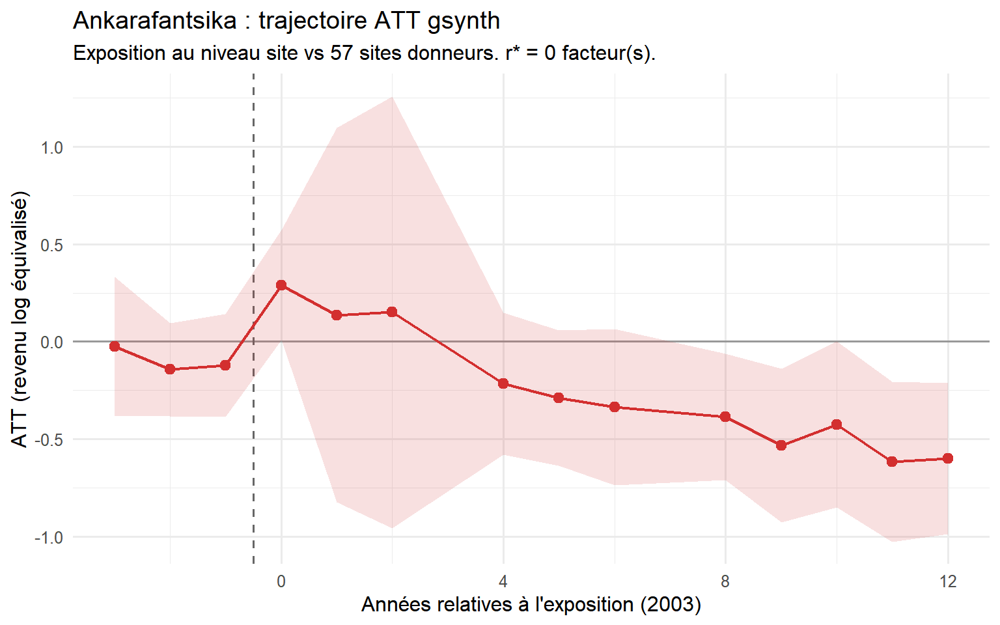
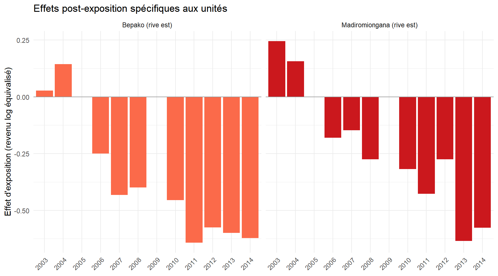
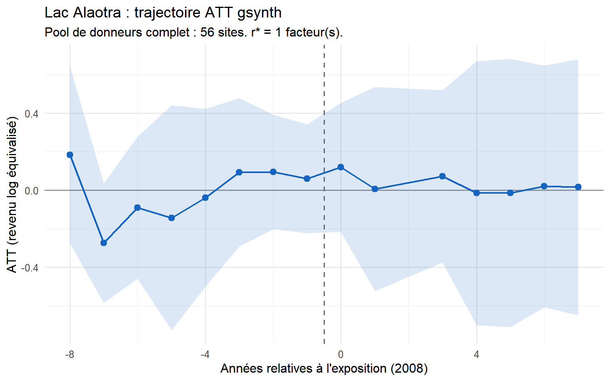
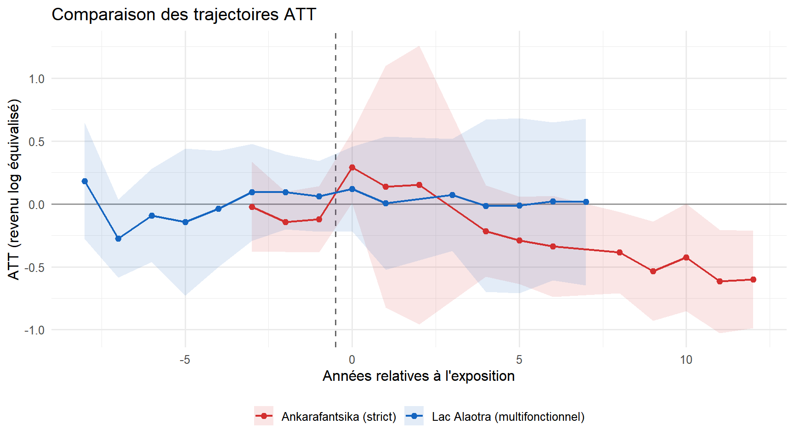

4 ````quarto
title: “Résultats” subtitle: “Impacts de la conservation stricte et multifonctionnelle sur le revenu des ménages” —
5 Ankarafantsika : conservation stricte (catégorie II UICN)
5.1 Construction du panel
Le modèle Marovoay comprend 2 sites exposés (Bepako et Madiromiongana, rive est) et des sites donneurs issus des 5 observatoires propres identifiés à l’Annexe B (Antsirabe, Tsiroanomandidy, Ambovombe, Mahanoro, Itasy). La période d’exposition commence en 2003, offrant 4 années de pré-exposition (1999–2002) et jusqu’à 12 années de post-exposition (2003–2014).
5.2 Trajectoire ATT gsynth
Le modèle de contrôle synthétique généralisé trouve un écart négatif persistant entre les sites de la rive est de Marovoay et leur contrefactuel synthétique. L’effet moyen du traitement sur les traités (ATT) post-exposition est d’environ -0.312 points logarithmiques (IC 95% : [-0.550, -0.073], p = 0.010), correspondant à une différence d’environ 27% par rapport au contrefactuel projeté. L’écart s’ouvre peu après l’extension du parc de 2002 et ne se referme pas sur la période d’observation.
Dans quelle mesure cet écart est attribuable au parc lui-même — plutôt qu’à la trajectoire économique plus large de la région de Marovoay — est une question que les données seules ne peuvent pas résoudre de manière définitive. Marovoay était historiquement la zone rizicole irriguée la plus productive de Madagascar, souvent désignée comme le grenier à blé du pays. À partir des années 1980, la région a connu un déclin bien documenté, alimenté par l’envasement de la Betsiboka, la dégradation des infrastructures d’irrigation coloniales et l’effondrement du soutien agricole de l’État. Cette trajectoire régionale est antérieure à l’extension du parc de 2002 et pourrait raisonnablement expliquer une partie de la divergence que gsynth attribue à l’exposition à la conservation, si les observatoires donneurs sur le plateau des hautes terres ou dans les zones sèches du sud n’étaient pas similairement affectés par la détérioration de l’agriculture irriguée des basses terres.
5.2.1 Vérification CTR ménages intra-Marovoay
| Marovoay : CTR ménages DiD | ||||
| Dispositif | Estimation | ES (FI) | ES (cluster) | % revenu |
|---|---|---|---|---|
| Rive est vs rive ouest | 0.000 | 0.050 | 0.046 | +0.0% |
L’estimation intra-Marovoay est proche de zéro avec une erreur standard cluster-robuste resserrée — différant de manière frappante par son ordre de grandeur de l’écart gsynth de -0.312 points logarithmiques rapporté ci-dessus. Ce contraste est un diagnostic clé qui ne peut pas simplement être mis de côté comme deux méthodes répondant à des questions différentes.
Le gsynth compare les villages de la rive est contre des observatoires donneurs situés sur le plateau des hautes terres ou dans les zones sèches du sud — des endroits avec des systèmes agronomiques différents, une exposition différente à l’envasement de la Betsiboka. Si la région de Marovoay dans son ensemble a décliné par rapport à ces observatoires pour des raisons sans lien avec le parc — l’effondrement des infrastructures d’irrigation, le retrait de l’État de l’économie rizicole — alors gsynth attribuera cette divergence régionale à l’AP, car le calendrier de l’exposition coïncide avec le début du panel observable. Le dispositif intra-Marovoay contrôle pour ce choc régional : les villages de la rive est et de la rive ouest partagent la même rivière, la même économie rizicole en aval et le même marché local.
Le fait que les revenus de la rive est et de la rive ouest aient évolué si étroitement tout au long de la période d’étude constitue donc un avertissement sérieux. Il suggère que la majeure partie de la divergence identifiée par gsynth est un phénomène régional — le déclin d’une région agricole autrefois prospère — plutôt qu’un effet pouvant être attribué avec confiance à la limite du parc. Les deux résultats doivent être lus ensemble, aucun ne l’emportant sur l’autre.
5.3 Effets spécifiques aux unités

6 Lac Alaotra : conservation multifonctionnelle (catégorie V UICN)
6.1 Construction du panel
Le modèle Alaotra traite l’ensemble de l’observatoire comme une seule unité exposée, agrégeant les sept fokontany en une médiane annuelle au niveau du site. L’exposition commence en 2008.
6.2 Trajectoire ATT gsynth

Le modèle gsynth pour Alaotra produit un ATT moyen de +0.014 points de log, statistiquement indiscernable de zéro (IC 95% : [?var:att_ala_ci_lo, ?var:att_ala_ci_hi], p = 0.928). L’absence d’impact détectable sur le revenu au Lac Alaotra contraste avec l’écart négatif à Ankarafantsika. L’interprétation la plus parcimonieuse est que le cadre CBNRM de Durrell, qui régule l’accès aux ressources de manière participative plutôt que de les prohiber entièrement, a préservé les moyens de subsistance des ménages tandis que les restrictions d’exclusion à Ankarafantsika les ont érodés.
6.3 Vérification CTR intra-Alaotra
| Alaotra : CTR ménages DiD | ||||
| Dispositif | Estimation | ES (FI) | ES (cluster) | % revenu |
|---|---|---|---|---|
| Distance ≤ 10 km | 0.015 | 0.075 | 0.113 | +1.5% |
| Usage extractif ≥ 12,5% | −0.042 | 0.074 | 0.152 | -4.1% |
6.4 Comparaison des deux cas

La comparaison entre les deux cas primaires est saisissante mais doit être interprétée avec prudence. À Ankarafantsika, la conservation stricte est associée à un effet négatif persistant, mais sa magnitude et son attribution restent incertaines en raison du déclin régional documenté de la plaine de Marovoay. À Alaotra, la conservation multifonctionnelle est associée à un effet nul, mais cette absence de détection pourrait également refléter une puissance statistique insuffisante. Avant de tirer des conclusions de gouvernance, une certaine prudence s’impose.
6.5 Robustesse

Les vérifications de robustesse confirment la direction et la persistance de l’écart à Marovoay dans l’ensemble des spécifications. Ce qui reste non résolu, c’est de savoir si cet écart reflète une exposition cumulée au parc ou les effets à long terme du même déclin régional — une question que ces données seules ne peuvent pas trancher.

````